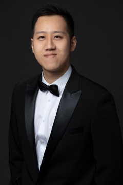

Baritone · Currently based in New York
zgxueyichen@gmail.com · yichenxue.com
Casting, concert, and management inquiries welcome

| Mandarin / Ping (cover) | Turandot | Virginia Opera | 2027 |
| Senator Potter / General Airlie / Bartender | Fellow Travelers | Glimmerglass Festival | 2026 |
| Imperial Commissioner | Madama Butterfly | Glimmerglass Festival | 2026 |
| Yamadori / Imperial Commissioner | Madama Butterfly | Opera Grand Rapids | 2026 |
| Dandini | La Cenerentola | Arizona Opera | 2026 |
| Yamadori / Imperial Commissioner / Sharpless (cover) | Madama Butterfly | Arizona Opera | 2026 |
| Marcello | La Bohème | Aspen Music Festival | 2025 |
| Schaunard | La Bohème | Arizona Opera | 2025 |
| Nardo | La finta giardiniera | Arizona Opera | 2025 |
| Amonasro (cover) | Aida | Arizona Opera | 2025 |
| Schaunard (cover) | La Bohème | Wolf Trap Opera | 2024 |
| Ponchel (cover) | Silent Night | Wolf Trap Opera | 2024 |
| Frank | Die Fledermaus | Martina Arroyo’s Prelude to Performance | 2019 |
| Baritone soloist | Carmina Burana | Hunter College Choir | 2025 |
| Bass soloist | RiverRun Festival | The Kennedy Center | 2023 |
| Bass soloist | Angel Island Oratorio | Santa Fe Opera | 2022 |
Martorella Voice ScholarshipNational Finalist & Grant Winner · 2025 & 2026
Met Opera Laffont CompetitionEncouragement Award · New York District · 2025
Gerda Lissner CompetitionGrant Winner · 2024
Career Bridges CompetitionGrant Winner · 2024
Opera Index CompetitionEmerging Artist Award · 2023
The Glimmerglass FestivalResident Artist · 2026
Aspen Music FestivalRenée Fleming Fellow · 2025
Arizona OperaMarion Roose Pullin Studio Artist · 2024–26
Wolf Trap OperaStudio Artist · 2024
Hunter College–CUNYMA, Vocal Performance · 2023
Manhattan School of MusicBM, Voice · 2018